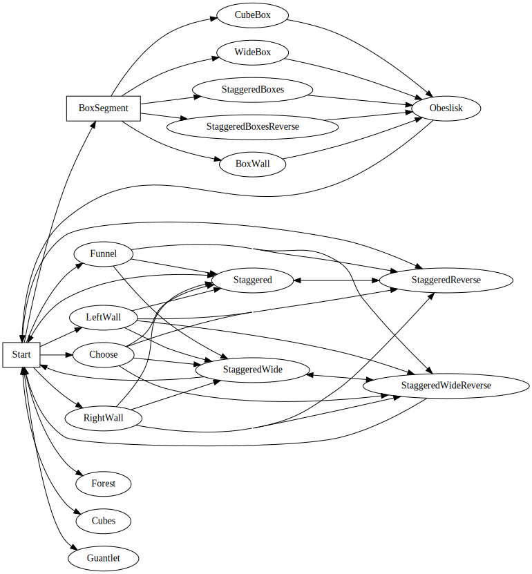

An infinite runner with cubes created in unity. Play it here.
The repo can be found at github.com/RyanGibb/cubes.
To allow the game to be infinite, whilst also avoiding floating point errors, the game world is periodically 're-rooted'. This involves moving the player and all objects back a certain distance in one frame. Objects behind the player can be safely removed.

However, it may prove challenging to get to a distance where floating point errors occur!
The world is generated using a Markov Chain containing transitions from segments to segments. Segments may be prefabricated or programatically generated.
The square boxes denote a segment with 0 length and simplify the building of the Markov Chain. They are similar to an epsilon transition in a state machine.